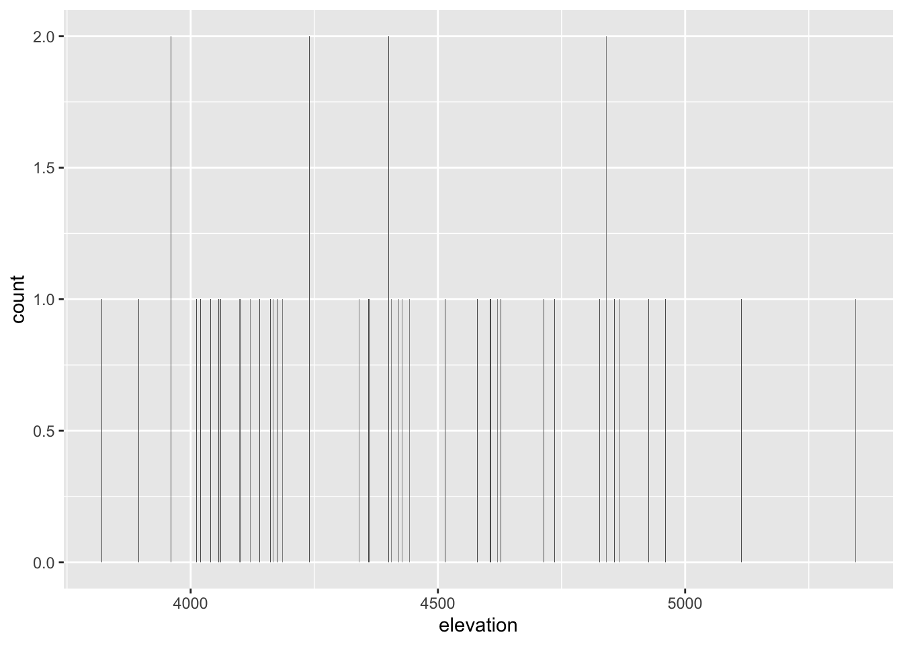

── Attaching core tidyverse packages ──────────────────────── tidyverse 2.0.0 ──
✔ dplyr 1.1.4 ✔ readr 2.1.5
✔ forcats 1.0.0 ✔ stringr 1.5.1
✔ ggplot2 3.5.1 ✔ tibble 3.2.1
✔ lubridate 1.9.4 ✔ tidyr 1.3.1
✔ purrr 1.0.2
── Conflicts ────────────────────────────────────────── tidyverse_conflicts() ──
✖ dplyr::filter() masks stats::filter()
✖ dplyr::lag() masks stats::lag()
ℹ Use the conflicted package (<http://conflicted.r-lib.org/>) to force all conflicts to become errorsUnivariate Viz
Exercise 1: Research Questions
peak elevation difficulty ascent length time rating
1 Mt. Marcy 5344 5 3166 14.8 10.0 moderate
2 Algonquin Peak 5114 5 2936 9.6 9.0 moderate
3 Mt. Haystack 4960 7 3570 17.8 12.0 difficult
4 Mt. Skylight 4926 7 4265 17.9 15.0 difficult
5 Whiteface Mtn. 4867 4 2535 10.4 8.5 easy
6 Dix Mtn. 4857 5 2800 13.2 10.0 moderate- A visualization of the categorical
ratingvariable of the hikes should include distinguishing visual elements for each category, such as a color scheme differentiated by hue. Theratingof each trail can be displayed in a color-coded table. - A visualization of the quantitative
elevationvariable could include visuals of each peak in order of height, or a more simplistic bar graph in which the y-axis is elevation and the x-axis is each peak.
Exercise 2: Load tidyverse

The package must be loaded.
Exercise 3: Bar Chart of Ratings - Part 1

Exercise 4: Bar Chart of Ratings - Part 2
Adding geometric layer and customizing plot theme.
# Adding geom_bar() to ggplot() function. Adds gray bars to plot ordered by number of hikes per category. Background is grey with white lines
ggplot(hikes, aes(x = rating)) +
geom_bar()
# Adding function labs() to previous functions. Adds labels to axes.
ggplot(hikes, aes(x = rating)) +
geom_bar() +
labs(x = "Rating", y = "Number of hikes")
# Adding "fill" command to geom_bar() function. Changes bar color to blue
ggplot(hikes, aes(x = rating)) +
geom_bar(fill = "blue") +
labs(x = "Rating", y = "Number of hikes")


Exercise 5: Bar Chart Follow-up
Part A
-
+is used byggplot()to string together different functions required to create plots in R. - The “geom” in
geom_bar()indicates that the function is defining the type of visualization being used for the data. -
labs()stands for “labels.” -
colorcolors the border of the bar, whilefillcolors the full bar.
Part B
Most hikes in the Adirondacks are of moderate difficulty.
Part C
I don’t like that the difficutly levels are not in a logical ordering; ordering them by difficulty makes them more logical than by bar height.
Exercise 6: Sad Bar Chart
# Construct bar chart of the quantitative elevation variable
ggplot(hikes, aes(x = elevation)) +
geom_bar()
This is not an effective visualization for this variable. The bars are hard to read, and due to the continuous nature of the elevation variable, the chart doesn’t effectively communicate the distribution of hike elevations.
Exercise 7: A Histogram of Elevation
Histograms are constructed by (1) dividing up the observed range of the variable into ‘bins’ of equal width; and (2) counting up the number of cases that fall into each bin. Compared to bar graphs, this allows for better visualization of rather disparate data where many different values exist.
Exercise 8: Building Histograms - Part 1
ggplot(hikes, aes(x = elevation)) will probably be followed by a line with the function geom_hist() or something like that
Exercise 9: Building Histograms - Part 2
# Adding function geom_histogram() creates a histogram, although an error message appears suggesting different bin width.
ggplot(hikes, aes(x = elevation)) +
geom_histogram()`stat_bin()` using `bins = 30`. Pick better value with `binwidth`.
# Adding "color" command to geom_histogram again adds outlines to each bin
ggplot(hikes, aes(x = elevation)) +
geom_histogram(color = "white")`stat_bin()` using `bins = 30`. Pick better value with `binwidth`.
# "Fill" changes the colors of the bins to blue.
ggplot(hikes, aes(x = elevation)) +
geom_histogram(color = "white", fill = "blue") `stat_bin()` using `bins = 30`. Pick better value with `binwidth`.
# labs(x =, y =) adds labels.
ggplot(hikes, aes(x = elevation)) +
geom_histogram(color = "white") +
labs(x = "Elevation (feet)", y = "Number of hikes")`stat_bin()` using `bins = 30`. Pick better value with `binwidth`.
# "binwidth" assigns a value to the bin size, in this case 1000 feet, which is too wide to be helpful.
ggplot(hikes, aes(x = elevation)) +
geom_histogram(color = "white", binwidth = 1000) +
labs(x = "Elevation (feet)", y = "Number of hikes")


Exercise 10: Histogram Follow-up
-
geom_histogramadds the histogram geometry. -
colorandfillhave the same function as with the bar graphs, butcolorhere helps make the histogram more readable by distinguishing each bin. -
binwidthis also an important part or readability. In this case, 9 bins (200 feet per bin) were most effective.
Exercise 11: Density Plots
Density plots are essentially smooth versions of the histogram. Instead of sorting observations into discrete bins, the “density” of observations is calculated across the entire range of outcomes. The greater the number of observations, the greater the density! The density is then scaled so that the area under the density curve always equals 1 and the area under any fraction of the curve represents the fraction of cases that lie in that range.

Exercise 12: Density Plots vs Histograms
- Density plots: communicate ranges and typical outcomes more effectively, especially with large n, but fall short in expressing discrete amounts of variables.
- Histograms: better visualize discrete ranges of data and are better at looking at small chunks of data in context, while are not as good at offering analysis of data trends.
Exercise 13: Code = communication
Important to indent lines of code after first line for long strings, and place line breaks after each +
Exercise 14: Practice
# Data on students in this class
survey <- read.csv("https://hash-mac.github.io/stat112site-s25/data/survey.csv")
# Reviewing variables
head(survey) cafe_mac minutes_to_campus fav_temp_c hangout
1 mashed potatoes 5 26 the mountains
2 is tasty 5 28 a city
3 burger 5 19 a forest
4 caesar salad 12 18 a forest
5 ice cream 0 24 the mountains
6 tofu 10 -10 the mountains# Creating bar graph for hangout
ggplot(survey, aes(x = hangout)) +
geom_bar(fill = "grey") +
labs(x = "ideal hangout", y = "# of students") +
theme_light()